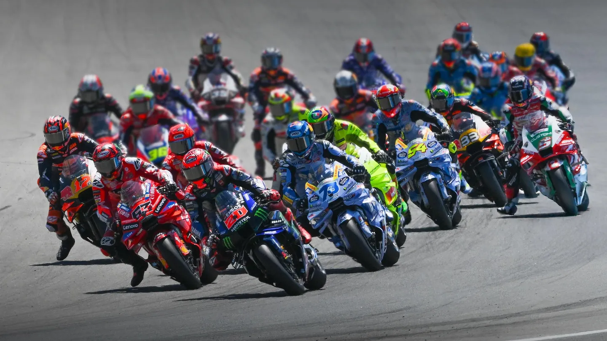

What is MotoGP?
Hosted by the Fédération Internationale de Motocyclisme (FIM), the FIM Grand Prix World Championship is the highest class of motorcycle road racing. MotoGP takes place across Europe, Asia, Oceania, North America and South America, concluding in Valencia, Spain at the end of the season. This year, the championship includes 22 grands prix to decide a champion based on overall points accumulated throughout the season.
A MotoGP race weekend includes practices on Friday, qualifying races and the MotoGP Tissot Sprint on Saturday, and the full-length Grand Prix on Sunday. During a Grand Prix, only the first 15 riders to finish earn points, with the winner gaining the maximum 25 points. Sprints are races consisting of fewer laps, awarding points to only the top 9 riders, with 12 points going to the winner.

The Bikes
The motorcycles used in MotoGP are specialized bikes unavailable for purchase by the general public and illegal to ride on public roads. Currently, 5 manufacturers compete in MotoGP, including: Aprilia, Ducati, Honda, KTM, and Yamaha. The bikes used in the championship are extremely fast. The top speed ever reached in MotoGP was 227.5pmh (336.1km/h), and bikes regularaly reach speeds of 223.7mph (360km/h) on the track.
Classes
The championship includes 3 official classes: MotoGP, Moto2, and Moto3. The MotoGP is the premier class of Grand Prix motorcycle racing and features 1000cc motorcycles. Moto2 is the intermediate class in the championship, and Moto3 is the entry class. Moving up through each class means faster bikes, higher speeds, more laps, and more skilled riders. MotoGP is extremely demanding and features 22 full-time riders.